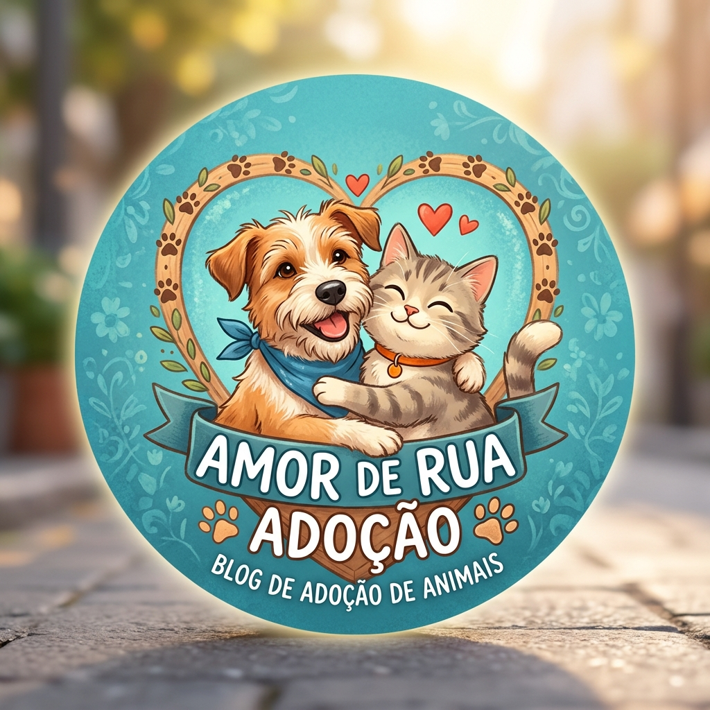

Meu primeiro post
Contribuições de: Alura
Sejam bem vindos oa meu site e se preparem para ver muitas fofuras a adocao! Temos pets de todos os gostos e que precisam de muito amor, adote com consiencia
Adote não compre, faça o bem para quem mais precisa

Contribuições de: Alura
Sejam bem vindos oa meu site e se preparem para ver muitas fofuras a adocao! Temos pets de todos os gostos e que precisam de muito amor, adote com consiencia